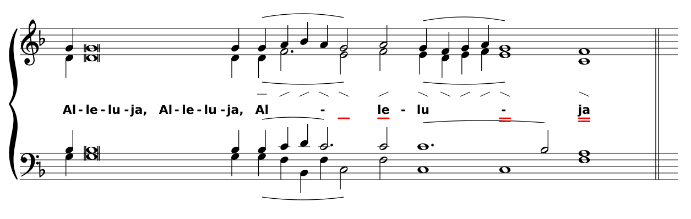
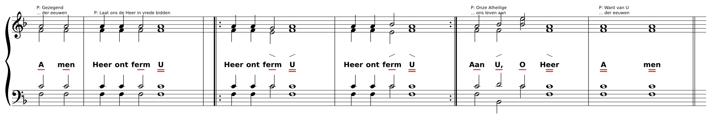

Alleluia toon 8. Het beeld schaalt mee met de breedte van het venster.
Alleluia toon 2. De liggende streep zit in het melisma op «Al».

Vredeslitanie (1a). Enkele streep, herhaling en dubbele streep.
